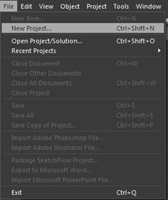
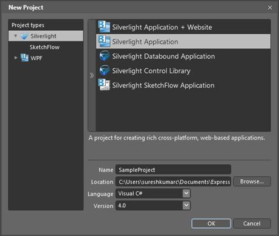
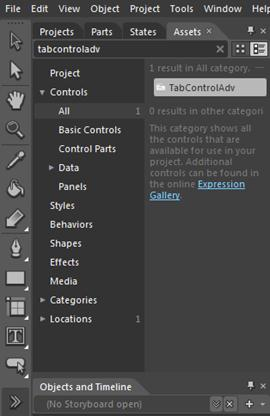
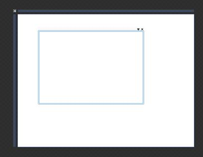
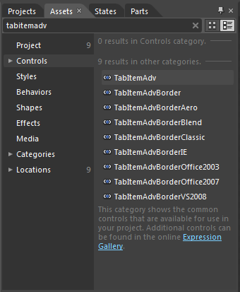
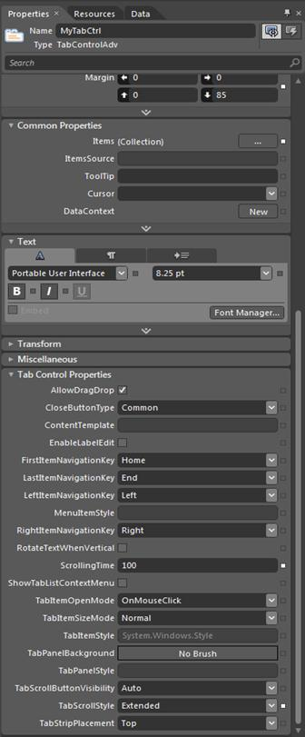
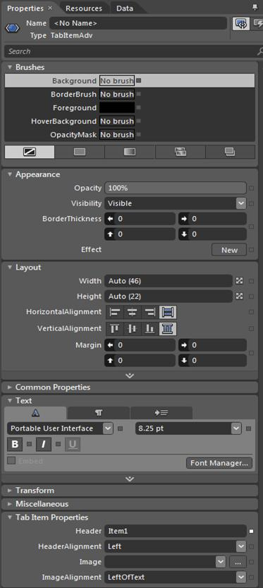

The following steps explain the ways of creating TabControlAdv application in Expression Blend.
1. Create a new Silverlight Application. File -> New Project.
2. In the New Project dialog box, select the Silverlight project type on the left pane and, on the right-pane, select Silverlight Application.
3. Enter a Name and Location for your project, select a Language (C#) in the drop-down box, and click OK.
4. Blend creates a new application that opens with the MainPage.xaml file displayed in the Design view.
5. Add Syncfusion TabControl to your project by completing the following steps:
a. On the menu, select Assets Window to open the Assets tab.
b. Under the Assets tab, enter TabControlAdv into the Search bar.
c. The TabControlAdv control's icon appears.
d. Double-click the TabControlAdv icon to add the control to your project.

Figure 779: Open New Project

Figure 780: Create New Project

Figure 781: Search TabControlAdv

Figure 782: TabControlAdv in Application

Figure 783: Search and Add TabItemAdv
Tab Control Properties:
You can change the Tab ControlAdv properties also in blend. Syncfusion Tab Control properties are placed in the Tab Control Properties tab in the properties panel.

Figure 784: TabControlAdv Properties
Tab Item Properties:
The user can edit the Tab Item properties in Blend also after selecting the Tab Item in Objects and TimeLine tab. The Tab Item properties are placed in Tab Item Properties tab in the Properties panel. The following snapshot describes Tab Item properties placed in Blend.

Figure 785: TabItemAdv Properties